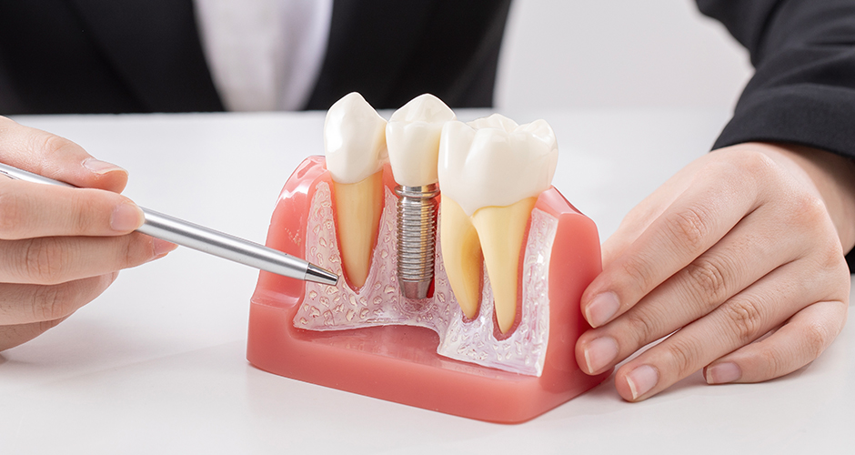
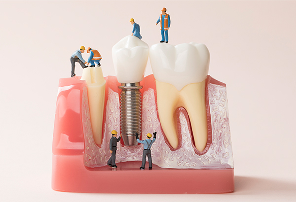
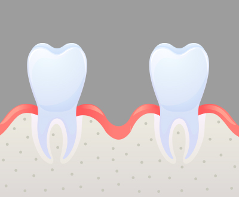
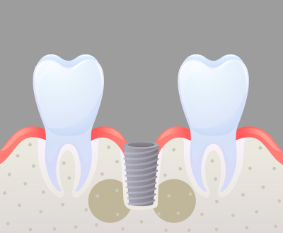
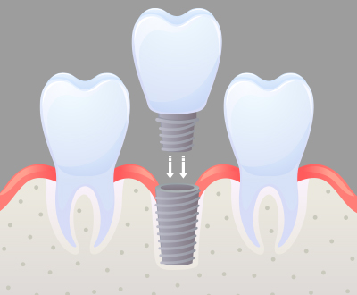

잇몸뼈 상태 확인
잇몸뼈가 얼마나 부족한지
상태 확인
<%=m_client_en%>
뼈이식은 임플란트의 성공률을 높이기 위한 필수적인 치료입니다.
뼈이식 임플란트는 잇몸뼈의 조건이 좋지 못하여 임플란트가 어려운 경우
뼈이식 노하우를 통해 치아를 복원하는 임플란트 치료입니다.

뼈이식은 임플란트가 필요한 환자이지만 잇몸뼈가 부족하여
임플란트 식립이 어려울 경우에 필요합니다.
뼈이식은 임플란트가 튼튼하게 자리 잡을 수 있도록 하기 위해서는
꼭 필요한 과정입니다.
튼튼한 건물을 짓기 위해 튼튼한 지반을 만드는 것으로 생각하시면 됩니다.

<%=m_client_name%>는 미국 FDA공인으로 검증받은
안전하고 우수한 뼈 이식 재료만을 안전하게 사용하고 있습니다.
각종 치주질환 등에 의해
잇몸뼈가 부족해진 경우
잇몸은 물론 뼈 주변까지
치은염이 진행되어
치주염으로 발전된 경우
치조골과 치주인대가 파괴되면
서이가 흔들리거나 저절로
빠지는 경우
상악동 거상술을
진행할 경우

잇몸뼈가 얼마나 부족한지
상태 확인

환자에게 가장 적합한 이식재로 뼈 이식
(환자의 상태에 따라 임플란트 동시 식립)

잇몸뼈가 재생된 것을 확인한 후
임플란트와 보철물을 결합하여 치료 마무리